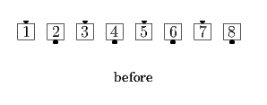
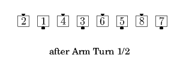
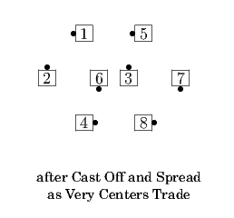
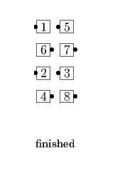

From a Tidal Wave, Facing Lines, or other applicable formations: All Arm Turn 1/2; Centers of each side Cast Off 3/4 and Spread as Very Centers Trade; Very Ends and Very Centers slide together and Cast Off 3/4 to finish in the center. Ends in Parallel Lines.
   
© Copyright 2004-2017 Vic Ceder and CALLERLAB Inc., The International Association of Square Dance Callers. Permission to reprint, republish, and create derivative works without royalty is hereby granted, provided this notice appears. Publication on the Internet of derivative works without royalty is hereby granted provided this notice appears. Permission to quote parts or all of this document without royalty is hereby granted, provided this notice is included. Information contained herein shall not be changed nor revised in any derivation or publication.